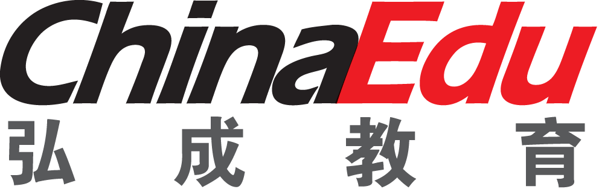

2015-2016年度个人述职
填报人：吴春雷
部 门：规划和需求组-培训
| 项目 | 描述 | |
|---|---|---|
| 101云课堂学生及教师端 | 负责项目各子模块前端样式及交互脚本开发 | 已上线 |
| LMS2.0项目 | 负责与其他前端开发人员协作完善项目中未健全功能及bug修复 | 已上线 |
| 学生版项目 | 负责项目部分模块前端样式及交互脚本开发 | 已上线 |
| 学起移动端IOS版项目 | 负责代码组织架构重构, 完善优化交互功能及bug修复 | 发布APP STORE |
| 过啦跨平台html5项目 | 负责整体架构, 技术选型, 指定编码规范及全部代码编写 | 与android与ios版联调成功待发布 |
定期对组内成员进行工作方面沟通
对2名实习员工进行技术培训, 帮助分析及解决实际项目中出现问题
在部门内部完成如下技术分享: